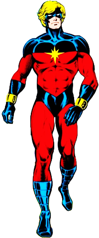

Коротко про героя
Після слияння з інопланетною енергією Керол обрала невероятну потужність і стала однією з найсильніших героїв Marvel. Вона захищає не тільки Землю, а й всю галактику.
Здібності та переваги
- Космічна сила і енергетичні атаки
- Політ і подорожі в космос
- Боєве майстерство і тактика